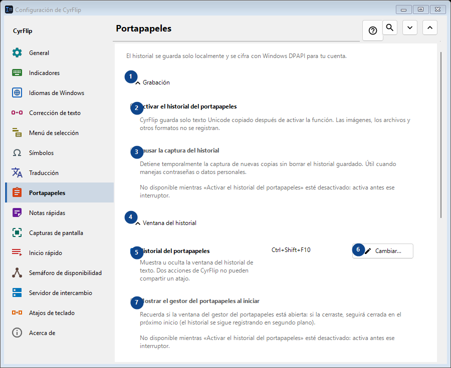
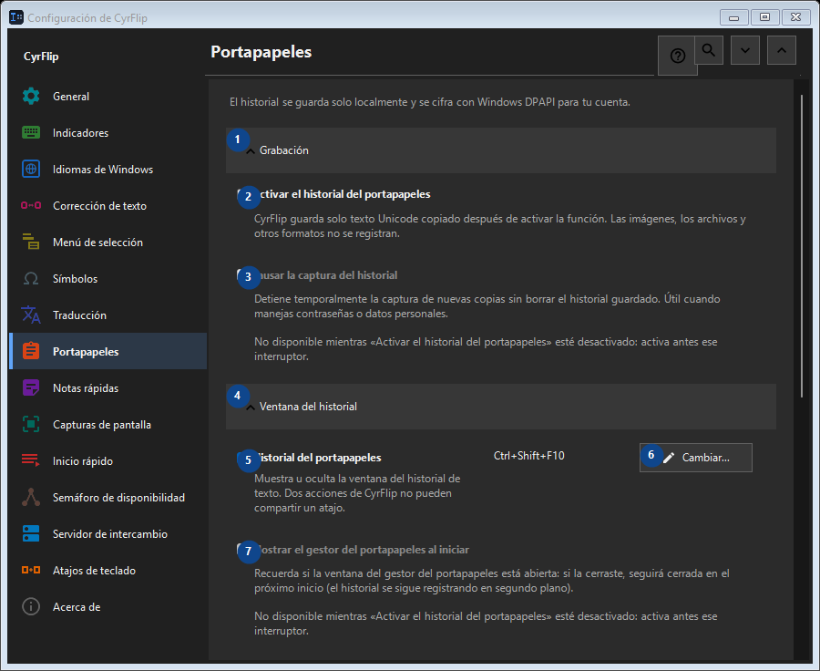

Portapapeles
Para qué sirve
El historial se guarda solo localmente y se cifra con Windows DPAPI para tu cuenta.


Orden de uso
Los ajustes se aplican de inmediato. No hay un orden obligatorio; usa los grupos siguientes.
Elementos
1. Grabación
Usa este comando para la acción indicada. Lee cualquier confirmación antes de aceptarla.
Tus atajos2. Activar el historial del portapapeles
CyrFlip guarda solo texto Unicode copiado después de activar la función. Las imágenes, los archivos y otros formatos no se registran.
Tus atajos3. Pausar la captura del historial
No disponible mientras «Activar el historial del portapapeles» esté desactivado: activa antes ese interruptor. Este elemento no está disponible. Activa primero la función o selecciona una entrada.
Tus atajos4. Ventana del historial
Usa este comando para la acción indicada. Lee cualquier confirmación antes de aceptarla.
Tus atajos5. Historial del portapapeles
Muestra u oculta la ventana del historial de texto. Dos acciones de CyrFlip no pueden compartir un atajo.
Tus atajos6. Cambiar - Historial del portapapeles
Usa este comando para la acción indicada. Lee cualquier confirmación antes de aceptarla.
Tus atajos7. Mostrar el gestor del portapapeles al iniciar
No disponible mientras «Activar el historial del portapapeles» esté desactivado: activa antes ese interruptor. Este elemento no está disponible. Activa primero la función o selecciona una entrada.
Tus atajos8. Transparencia de la ventana del historial
No disponible mientras «Activar el historial del portapapeles» esté desactivado: activa antes ese interruptor. Este elemento no está disponible. Activa primero la función o selecciona una entrada.
Tus atajos9. Buscar en el historial
Abre una ventana aparte para buscar por un fragmento de texto. Escribe al menos tres caracteres.
Tus atajos10. Limpieza
Usa este comando para la acción indicada. Lee cualquier confirmación antes de aceptarla.
Tus atajos11. Borrar todo el historial
Elimina todas las entradas de la memoria y del archivo local cifrado. No se puede deshacer.
Tus atajos12. Traslado a otro equipo
Usa este comando para la acción indicada. Lee cualquier confirmación antes de aceptarla.
Tus atajos13. Exportar...
Un único archivo de texto abierto con las notas y el historial del portapapeles que elijas: se lee en cualquier editor o en el teléfono y se importa en CyrFlip en otro equipo. El archivo no se cifra. La importación muestra lo que se añadirá y no elimina nada.
Tus atajos14. Importar...
Usa este comando para la acción indicada. Lee cualquier confirmación antes de aceptarla.
Tus atajos